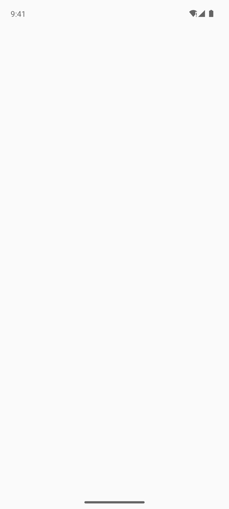

Synthetic check of the published SDK in the internal test app against DEV. Generated 2026-11-13 19:36 UTC from the run's real results.
| Platform | Android |
| SDK version | 0.7.11 (maven latest) |
| Environment | DEV · https://api-dev.deepdots.com |
| Failed scenario | answer → submit (submit) |
| Timestamp | 2026-11-13T19:35:05.731Z · failed on the retry too |
| Injected fault | none |
[Failed] monitor-submit (1m 34s) (Assertion is false: "e2e-cooldown-completed", id: lab-scenario is visible)


SDK events and network
[lab] sdk init 0.7.11 (Maven Central) env=Development api=https://api-dev.deepdots.com
[lab] sdk scenario=checkout-time key=unR0ncfqAPCBAwIcK1E0gY5bLB4In33p nav=history lang=en
[lab] sdk userId=d241981f-ea9e-455c-868f-e64c9a7721b8
[lab] nav launch → /
[lab] host consent accepted
[lab] sdk init 0.7.11 (Maven Central) env=Development api=https://api-dev.deepdots.com
[lab] sdk scenario=checkout-time key=unR0ncfqAPCBAwIcK1E0gY5bLB4In33p nav=history lang=en
[lab] sdk userId=4c1366db-8b64-4447-ade6-a3e2f5b71c0a
[lab] nav launch → /
[lab] host consent accepted
[lab] sdk init 0.7.11 (Maven Central) env=Development api=https://api-dev.deepdots.com
[lab] sdk scenario=checkout-time key=unR0ncfqAPCBAwIcK1E0gY5bLB4In33p nav=history lang=en
[lab] sdk userId=484efd19-e181-4a61-9abe-fba21f8a53f8
[lab] nav launch → /
[lab] host consent accepted
[lab] nav / → /cart
[lab] nav /cart → /checkout
[lab] popup shown id=7e3755b0-d2e7-11f1-ab43-833369eb683b survey=5581b5a0-d2df-11f1-b287-1be76c3f931d
[lab] sdk init 0.7.11 (Maven Central) env=Development api=https://api-dev.deepdots.com
[lab] sdk scenario=e2e-cooldown-completed key=GrRj95spi2mVHP6L89eZPVpoQTYA4hHY nav=history lang=en
[lab] sdk userId=9681dbc8-9c09-4987-9867-142fccaf5ef2
[lab] nav launch → /
[lab] sdk init 0.7.11 (Maven Central) env=Development api=https://api-dev.deepdots.com
[lab] sdk scenario=e2e-cooldown-completed key=GrRj95spi2mVHP6L89eZPVpoQTYA4hHY nav=history lang=en
[lab] sdk userId=e01b9e00-2b7c-430a-b419-c0e14f4dbd07
[lab] nav launch → /
[lab] sdk init 0.7.11 (Maven Central) env=Development api=https://api-dev.deepdots.com
[lab] sdk scenario=fault-popups-error key=invalid-key-mf3244 nav=history lang=en
[lab] sdk userId=e92ed3a3-0002-4f3a-8f5a-01f1a4ad1d5d
[lab] nav launch → /
[lab] host consent accepted
[lab] nav / → /shop
[lab] nav /shop → /product/ull-socks
[lab] host add to cart ull-socks (cart 3)
[lab] nav /product/ull-socks → /cart
[lab] nav /cart → /checkout
| Scenario | Result |
|---|---|
| SDK init + version | PASS |
| popups-error → no popup, host usable | PASS |
| answer → submit | FAIL |
| trigger → render | PASS |